<ion-app>
  <ion-split-pane contentId="main-content">
    <ion-menu contentId="main-content" type="overlay">
      <ion-content>
        

        <ion-list id="chat-list">
          <!-- <ion-list-header>Chats</ion-list-header> -->
          <ion-note>Your chats are listed below</ion-note>

          <ion-menu-toggle auto-hide="false">
            <div class="chat-button-container">
              <ion-item  lines="none" detail="false" routerLinkActive="selected">
                <ion-icon aria-hidden="true" slot="start" [ios]="getDefaultChatSession().icon + '-outline'" [md]="getDefaultChatSession().icon + '-sharp'"></ion-icon>
                <ion-label routerDirection="root" [routerLink]="[getDefaultChatSession().url]" >Default chat</ion-label>
              </ion-item>

              <!-- <ion-button class="custom-button"></ion-button> -->
            </div>
            
          </ion-menu-toggle>

          <ion-menu-toggle auto-hide="false" *ngFor="let p of getNonDefaultChatSessions(); let i = index">
            <div class="chat-button-container">
              <ion-item  lines="none" detail="false" routerLinkActive="selected">
                <ion-icon aria-hidden="true" slot="start" [ios]="p.icon + '-outline'" [md]="p.icon + '-sharp'"></ion-icon>
                <ion-label routerDirection="root" [routerLink]="[p.url]" >Chat {{ p.id }}</ion-label>
                <ion-button class="custom-button" (click)="handleDeleteChatAction(p.id)">
                  <ion-icon slot="icon-only" name="close-outline"></ion-icon>
                </ion-button>
              </ion-item>

              <!-- <ion-button class="custom-button"></ion-button> -->
            </div>
            
          </ion-menu-toggle>

          <ion-item lines="none" detail="false" routerLinkActive="selected" class="new-chat-button" (click)="handleNewChatAction(generateRandomId())">
            <ion-icon slot="start" name="add-outline"></ion-icon>
          <ion-label>New chat</ion-label>
          </ion-item>

          <!-- <ion-button fill="clear">
            <ion-icon slot="start" name="add-outline"></ion-icon>
            <ion-label>New chat</ion-label>
          </ion-button> -->
        </ion-list>

        <ion-list id="labels-list">
          <ion-list-header>Created by</ion-list-header>

          <a href="https://github.com/Gacrucis" target="_blank">
          <ion-item *ngFor="let label of labels" lines="none">
              <ion-icon class="credits-icon" aria-hidden="true" slot="start" ios="heart-outline" md="heart-sharp"></ion-icon>
              <ion-label>{{ label }}</ion-label>
            </ion-item>
          </a>
        </ion-list>
      </ion-content>
    </ion-menu>
    <ion-router-outlet id="main-content"></ion-router-outlet>
  </ion-split-pane>
</ion-app>
